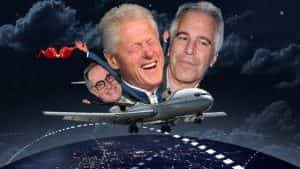
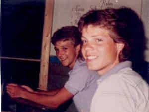
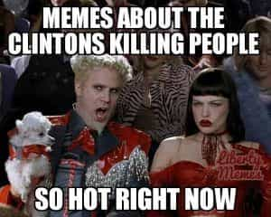
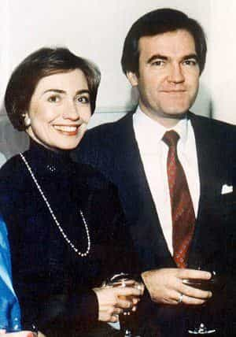

< < < Back
Hillary And Bill Clinton Are Criminal Masterminds Wielding Incredible Power – Return Of Kings
One has to detest and at the same time admire the criminal genius of crooked Hillary “Rotten” Clinton and former President Bill Clinton. Consummate political game players, they went from backwater Arkansas all the way to the White House, and thanks to a Marxist media covering Hillary’s rear flank, she has a real chance at becoming selected (not elected) for the office of President for the next 8 years.
The stories surrounding the couple’s criminal activity stretch back to the very beginning of their rise to power, in 1980s Arkansas. Arguably, Bill fits the model of the sexually promiscuous psychopath perfectly, and Hillary fits the profile of the power obsessed psychopath perfectly. Together, they have repeatedly and literally gotten away with murder if emerging reports of their crimes are to be believed. The revelation of this criminality is thanks to the internet, not sycophantic journalists who won’t do their fucking job.
These stories are only a briefer on the mountain of dirty dealings involving this power-seeking couple. They involve allegations of everything from Bill fathering a son with a prostitute, a son he abandoned, to hanging out with a pedophile dozens of times on his private island, to trafficking cocaine then killing numerous people who witnessed and had knowledge of a cocaine drop in rural Arkansas, to killing nearly 50 people who had incriminating evidence against them, among countless other scandals you may not have heard of.
Bill and His “Peaches”

Danney Williams still claims to be Bill Clinton’s illegitimate son to this day
Monica Lewinsky was only the tip of the iceberg when it comes to former President Clinton screwing everything in sight. Even in his early days as Attorney General of Arkansas, Little Rock was awash in rumors about Bill’s sexual mania. When he became governor twice, according to the testimony of Arkansas State Troopers and body guards he couldn’t keep his pants zipped. These officials would later testify to witnessing Clinton’s sexual escapades with hundreds of women. Trooper L.D. Brown testified he personally drove Billy to hundreds of extramarital affairs on state time and with state cars.
Trooper Larry Patterson also testified he witnessed a department store clerk performing oral sex on Clinton in a parked car numerous times, including in a parking lot close by Chelsea’s elementary school and near the Governor’s Mansion. Patterson even went so far as to say he often felt like Clinton’s “pimp” who procured women for him to have sex with when he gave speeches as governor and was on the campaign trail.
I saw, on several occasions, Bill Clinton engaging in sexual acts. While I was either blocking the road or working security at the Governor’s mansion, I saw it with my own eyes take place, so it’s not a rumor, it is firsthand. I was told by Bill Clinton that this was part of my job, to keep people from finding out about his affairs… It was probably the most bizarre time I’ve spent in my tenure with the State Police. I would be required to go out into the audience and get women’s telephone numbers and their names, and to block streets and sit in women’s driveways until the wee hours of 3, 4, and 5 o’clock in the morning…that’s what I was required to do. I was told, when I protested about that, if I didn’t like it to find another job.
Officer Roger Perry also corroborates Bill’s sexual appetite, and details how he would use different troopers for hookups with different women.
The entire conversation inside a vehicle in a two-hour drive from one point to another would be totally about sex and women or jokes. He would actually ask people how they performed oral sex on women in cars. I’ve been in that conversation. He would ask if you had ever had two to three women at one time in one bed; things like this. Bill Clinton was obsessed with that. And he had certain troopers that he used for certain women. And Larry Patterson and Danny Ferguson were used for two women in particular.

Clinton and Alan Dershowitz took flights on the “Lolita Express” to Epstein’s private island
And then, there’s one of the biggest sex scandals of all, with claims that Clinton fathered a son–Danney Williams—with a black prostitute, who to this day claims Bill Clinton is his father and to many bears a striking resemblance to the former President. According to Bobbie Ann Williams, the former prostitute, the pregnancy happened after a cocaine-filled weekend of partying. (Bill’s own brother, Roger Clinton, is seen on DEA undercover footage saying he had to get some cocaine for Bill because “he’s got a nose like a vacuum cleaner.”) The former prostitute, along with many other women who Clinton banged have reportedly been threatened, told to dummy up and keep their mouths shut by Hillary.
More recently, Bill was connected to convicted pedophile Jeff Epstein. As reported by The Daily Mail:
Bill Clinton spent enough time aboard disgraced Wall Street mogul Jeffrey Epstein’s ‘Lolita Express’ airplane that he should be eligible for frequent flyer miles, according to a shocking new report that reveals how often the former U.S. president road along with with the convicted sex offender. Flight logs reviewed by Fox News show Clinton took 26 trips aboard Epstein’s Boeing 727 jet, more than double the 11 flights previously known. Epstein’s jet was reportedly set up with a bed where guests had group sex with young girls.
The story of the Clintons goes well beyond banging half of Arkansas and spending a curious amount of time with a pedophile. (How convenient that legalizing pedophilia is emerging as an agenda item and is making its appearance in pop music!) Lamestream media featured reports on Bill’s sexual dalliances in 1994, but the bombshell went nowhere in the overall narrative, perhaps because the troopers revealing the sexcapades were being threatened.
Threatening Troopers
Once Bill had screwed half of Arkansas, and threw his hat into the ring for a Presidential run, several troopers came forward telling tales about what he had been doing in his more than a decade as governor. In the ensuing scandal the media dubbed Troopergate, State Troopers Larry Patterson and Roger Perry spilled the beans about Clinton’s “Cheatin’ Heart” to journalist David Brock.
Brock’s story caught fire, and started to spread. However, during Troopergate, Clinton reportedly threatened the police, saying their careers would be destroyed, and they themselves would be destroyed if the stories didn’t stop. Patterson, who was no less than a State Trooper being threatened, even received a handwritten note expressing concern about his health. He told interviewers:
I was not physically afraid of Bill Clinton, I was afraid of his power… He had some people [surrounding him] who were quite scary.
In addition to threatening law enforcement officers (and with a long trail of “Arkancided” bodies behind them already, as we will see in a moment), both Crooked Hillary and Bill referred to police as “ignorant son of a bitches.” Hillary was openly hostile towards law enforcement officers, to the extent many Arkansas State Troopers would work double shifts and overtime just to avoid traveling with her. One Trooper is quoted as saying:
Deep down that woman really hated Arkansas, the people in it, and almost everything else except being top dog.
Brock later apologized to Clinton, but did not retract any of the facts in his story. Maybe he was afraid he’d end up dead of two gunshot wounds to the back of the head in an “Arkancide”?
Mena, Arkansas

The Mena scandal was even covered by local news stations and implicated the involvement of three presidential administrations
The Troopergate scandal pales in comparison to all the stories surrounding the tiny town of Mena, Arkansas.
Reporter Gary Webb of the San Jose Mercury News broke a huge story that alleged when Bill Clinton was governor, the Mena airport was a CIA Drop Location for cocaine being smuggled into the United States from Latin America. (Additionally, three presidential administrations have been connected to Mena, AR drug smuggling including Reagan, Bush I, and Clinton).
There is little doubt it was the center of a multibillion dollar drug running and money laundering operation. Reports also surfaced the airport was used to transport arms to Nicaraguan contras during the Reagan administration. Loads of cocaine averaging 300 lbs and worth millions of dollars were parachuted into remote locations in Arkansas in the single largest cocaine smuggling operation in U.S. history. Trooper L.D. Brown testified Governor Clinton was aware of all this in 1984, but did nothing to stop it. Perhaps because he was profiting from it.
A few years later, two young boys, Kevin Ives and Don Henry were found dead on train tracks in rural Arkansas after some say they witnessed one of the police-protected drug drops of the type detailed above. Arkansas State Medical Examiner Fahmy Malak, who by many accounts was falsifying death reports regularly, under the protection of Clinton’s power (in one case reporting ulcers had killed a decapitated man) ruled the deaths of Ives and Henry as “accidental,” the result of falling into a “deep sleep” on the train tracks after smoking marijuana.
However, forensic evidence showed their deaths were the result of foul play before they were put onto the train tracks for the next train to run over. Their deaths were only the beginning of a reign of terror once rumors of government-involved cocaine smuggling surrounding the case began to catch fire. Each time a witness came forward who claimed to have knowledge of what really happened during the botched drug drop and subsequent murders of two young boys, they wound up dead—usually from a shotgun blast.

Kevin Ives and Don Henry were only the beginning of a long list of casualties connected to the Mena drug smuggling operation
People close to the case started dropping like flies. One witness, Keith Coney said he knew too much about the murders and feared for his life—and indeed, he was later found dead. Coney had been slashed in the neck by an assailant, and fled on a motorcycle only to crash into the back of a truck, a crash that killed him.
Boonie Bearden, another witness who claimed to have information in the case disappeared, never to be seen again. Keith McKaskle, who also claimed to have knowledge of the crimes died from 113 stab wounds. Next, Gregory Collins claimed to have knowledge of the murders, and was found dead of a shotgun blast to the face. Jeff Rhodes also claimed to have knowledge of the murders, and was later found dead in a dumpster of a gunshot blast to the head.
Richard Winters claimed to have knowledge of the Ives/Henry case and was also killed by a shotgun blast. Jordan Ketelson was killed before he could testify, also from a shotgun blast. How these people dropping like flies in rural Arkansas surrounding a double homicide never made it to the Nightly News only shows what a lock grip on information the media had over the nation for 50 years.
Jean Duffey, an agent with the drug task force went up against the machine to try and fight the drug smuggling. She later said:
I didn’t understand the power of the political machine back then, but after being persuaded by the FBI to assist in an investigation they opened in 1994, I learned of connections to the CIA, Mena, and drug-smuggling. I finally understood; to solve the train deaths case would be to expose the crimes of Mena, and no government agent who has come close to doing either has survived professionally.
Or literally survived, it would seem. Just when the Mena scandal was gaining momentum and even mainstream media coverage during the 1992 campaign, a Time hit piece came out and quashed the issue. Unfortunately, the rise of the internet was in its infancy, and in these days the mainstream media reigned supreme, so the huge scandal was quickly forgotten.
During the Clinton presidency, accusations resurfaced (most notably in the film Clinton Chronicles) that Clinton, during his time as governor of Arkansas, and other high-ranking state officials were involved in some way with illegal cocaine importation, money laundering, and drug use centered upon the airport in the tiny town of Mena. The claims never gained the traction with “journalists” they deserved.
Clinton Body Count

The Clinton Body Count has even received mainstream newspaper coverage this year, although usually with a derisive tone
It freaks me out to even cover this. If I am found dead, I DID NOT commit suicide. All jokes aside, this is without a doubt the most serious of the possible Clinton crimes. Mysterious deaths have followed Hillary and Bill from Arkansas through their years in the White House, and mysterious deaths have started happening all over again in Hillary’s 2016 campaign.
Three men with ties to the DNC—one of which Julian Assange insinuated was the man behind the DNC email leak scandal—have all wound up dead this summer. Seth Rich was the email leaker, reportedly “robbed” then killed in the wee hours of the morning, even though his wallet and personal items were still found with his body. Rich was a data analyst, so it’s obviously he would have access to sensitive DNC computer systems.
Then there was Shawn Lucas, found dead on his bathroom floor after serving the DNC with a summons for fraud on behalf of Bernie Sanders supporters. Finally, John Ashe apparently dropped a barbell on his throat a few days before he was scheduled to testify about shady financial dealings involving a former Clinton crony.
But wait, there’s more. These deaths are only the most recent on the growing Clinton Body Count list of convenient deaths. Earlier this month, author Victor Thorn perhaps became the latest victim on this growing list of bodies of people who either crossed the Clintons, wrote unflattering things about them, or had incriminating evidence.
American Free Press contributor Victor Thorn, 54, a long-time researcher and critic of Hillary and Bill Clinton, has been found dead. Police reports indicate he died of a self-inflicted gunshot wound.
“Self-inflicted gunshot wounds” are the standard cover story for most of the 50 deaths on the Clinton Body Count list. Apparently, there are a lot of people inflicting gunshot wounds on themselves, often several gunshot wounds at the same time or numerous gunshots to the back of their own head. All in all, there are around 50 bodies of people who were close to the Clintons found dead under mysterious circumstances, most of them in the prime of their lives.
A few were either unbelievable strokes of luck or planned hits for the Clintons, like a plane crash that allowed them to wash their hands of two men at the same time: Ron Brown, former Chair of the DNC and Cabinet member who was facing a corruption investigation and threatening to expose the White House’s yet unrevealed Asian fund-raising scheme, and Charles Meissner, assistant secretary for international trade who faced federal charges for campaign finance fraud, a scandal that enmeshed the Clinton administration. These threats went away when their plane took off from mujahideen-infested Bosnia and crashed into a mountainside.

Hillary with Foster, who some say was her lover before she had him executed
The most infamous name on the lengthy list is Vince Foster, found dead in Ft. Marcy Park in Washington, a lawyer who had intimate details of the Clintons’ financials in dirty dealings like Whitewater. Foster made a call to Hillary hours before his “suicidal” death. The following day, in what looks like a huge coverup, Bill Clinton fired every U.S. attorney in the country and also fired the head of the FBI William Sessions, an unprecedented move in which all officials in those offices were replaced.
There’s even a White House Chef on the list who worked under the Clintons found dead in a mysterious drowning in New Mexico. Then there’s Mary Mahoney, killed in another botched robbery (same playbook as Seth Rich) who would have been a star witness in the Clinton impeachment trials, who refused Clinton’s sexual advances. Were these dozens of convenient deaths accidents? Or do these deaths reflect FDR’s prescient quote:
In politics, nothing happens by accident. If it happens, you can bet it was planned that way.
Murdering people surely goes well beyond the Monica Lewinsky blowjob scandal. But, as usual the media didn’t do their job in informing the American public what was really going on in the 1980s and 1990s.
Even More Scandals
The dirty dealings and deaths surrounding Hillary and Bill rival a horror film
The Clinton Foundation. Whitewater. Emailgate. Benghazi. Foggy Bottom. Sidney Blumenthal. The Chicago Mercantile Exchange incident, in which Hillary made a statistically impossible $100,000 profit off a tiny $1,000 initial investment. ADFA. Dan Lasater. Don Tyson tax breaks and DEA linked cocaine trafficking. The list of possible Clinton-involved crimes goes on and on and on.
To me, what is most telling about all these scandals is not that they happened, as it is coming to light that most people in government are totally corrupt sons of bitches, but what adept game players the Clintons are, and just how dirty they are. As Michael Corleone says in The Godfather III just as his own family is becoming involved in politics:
The higher I go, the crookeder it becomes.
The story of the rise of the Clintons is rivals the story of the rise of the Bushes. Here we have the two top political families in America, the Clintons and Bushes, who have been either President, Vice President, Secretary of State or running for the office since 1980, running the country like an oligarchy and involved in criminality that would make a mafia don blush. What is amazing to me is what sheep the American people have been, believing these people have their best interests in mind when really they’re playing the dirtiest game known to man to rise to dominance in a government that does nothing but waste taxpayer money, and in which they engorge themselves and their friends.
Gentlemen, the Clinton saga is proof political games have never changed since Greek and Roman times, but what has changed is how masterful politicians have become at fooling the masses, concealing their crimes and having the media play cover for them. Realize, when Trump uses the moniker “Crooked Hillary” it is not hyperbole. This duo has been involved in criminality most of their lives.
Read More: Crooked Hillary Accepts Democratic Party Nomination In Ravishing Chairman Mao Outfit